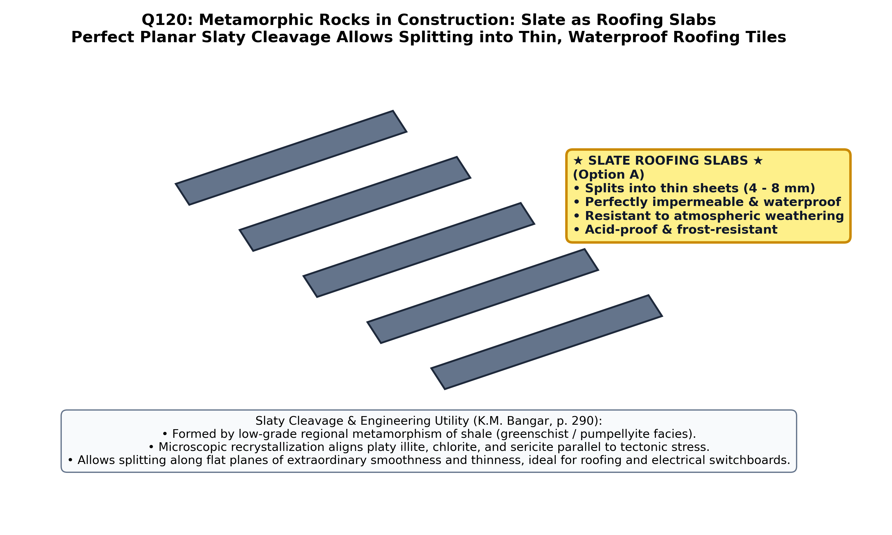

1. Theoretical Foundation: Why Slate Is the Universal Natural Roofing Slab
Slate is a fine-grained, low-grade regionally metamorphosed pelitic rock derived from shale or mudstone under directed tectonic compression (greenschist/sub-greenschist facies). During metamorphism, clay minerals recrystallize into microscopically aligned, parallel flakes of muscovite (sericite), illite, and chlorite oriented perpendicular to the maximum compressive stress ($\sigma_1$). This imparts an extraordinary penetrative fabric known as slaty cleavage, enabling slate to be split effortlessly into thin ($4\text{--}10\text{ mm}$), flat, smooth, light, and completely impervious sheets ideal for roofing slabs (roofing tiles):
| Rock Material |
Fabric & Splitting Behaviour |
Weight & Water Absorption |
Suitability as a Roofing Slab |
| SLATE (Option A) |
Perfect penetrative slaty cleavage; splits into thin ($4\text{--}10\text{ mm}$), flat, uniform sheets |
Lightweight in thin sheets; extremely low water absorption ($< 0.4\%$), high transverse flexural strength |
UNIVERSAL ROOFING SLAB / TILE (Correct Answer) |
| Granite (Option B) |
Massive, non-foliated interlocking plutonic fabric; cannot be split into thin sheets |
Heavy massive blocks ($2.65\text{--}2.75\text{ g/cm}^3$); zero cleavage |
Unsuitable for pitched roofing tiles; used for heavy foundations & piers |
| Marble (Option C) |
Granoblastic (non-foliated) interlocking calcite mosaic; lacks cleavage planes |
Heavy slabs; soluble in acid rain and prone to thermal warping |
Used for interior flooring, wall cladding, and statuary |
| Gneiss (Option D) |
Coarse gneissic banding (segregated quartzo-feldspathic and mafic bands); poor splitting |
Breaks into thick, rough slabs ($> 5\text{--}15\text{ cm}$); too heavy for roof trusses |
Used for heavy masonry, paving setts, and road aggregates |
"
Slate is an extremely fine-grained metamorphic rock formed from shales and clays. Its most valuable engineering property is its perfect
slaty cleavage, by virtue of which it can be split into very thin, smooth, tough, and flat sheets of uniform thickness. Because slate also possesses negligible porosity (water absorption $< 0.5\%$), high transverse bending strength, and complete resistance to frost and atmospheric weathering,
it is universally used as a roofing slab, damp-proof course (DPC), electrical switchboard panel, and school slate."
— K.M. Bangar, Principles of Engineering Geology (Standard Publishers, Chapter 14: Building Stones, p. 298)
2. Key Indian Occurrences & Quality Tests of Roofing Slate
- Famous Indian Slate Belts:
- Himachal Pradesh: Kangra (Dharamshala, Khaniara), Mandi, and Chamba districts (premier Himalayan roofing slates).
- Haryana & Rajasthan: Rewari, Kund, and Alwar (Delhi Supergroup slates).
- Andhra Pradesh: Markapur belt in Prakasam district (Cumbum Formation, Nallamalai Group of Cuddapah Supergroup).
- Bihar: Munger (Kharagpur Hills).
- Field Quality Ring Test: A first-class roofing slate gives a sharp, clear metallic ringing sound when struck lightly with a knuckle or hammer, does not feel greasy to the touch, and shows zero free carbonate ($\text{CaCO}_3$) effervescence with dilute $\text{HCl}$ (since calcite dissolves in acid rain and ruins the roof).

Figure 120.1: Formation of penetrative slaty cleavage by tectonic alignment of mica/chlorite platelets perpendicular to $\sigma_1$, allowing slate to be split into thin, impervious, high-flexural-strength roofing slabs, contrasted with massive granite, granoblastic marble, and coarse-banded gneiss.
Official OPSC 2019 Question & Forensic Option Analysis
Q120. Which of the following materials is generally used as a roofing slab ?
(A) Slate
(B) Granite
(C) Marble
(D) Gneiss
✔ Verified Correct Answer: Option (A) — Slate
Forensic Verification: Slate is universally used as a natural roofing slab (roofing tile) because its perfect slaty cleavage allows it to be split into very thin ($4\text{--}10\text{ mm}$), flat, light, and smooth rectangular sheets that are completely impervious to rainwater (absorption $< 0.4\%$) and possess high transverse bending strength.
Why this is wrong: Granite is a massive, unfoliated plutonic rock lacking cleavage planes. It cannot be split into thin sheets and is far too heavy for pitched roofing tiles.
Why this is wrong: Marble is a non-foliated granoblastic metamorphic rock composed of interlocking calcite crystals. It lacks rock cleavage, cannot be split into thin tiles, and dissolves/etches in acid rain.
Why this is wrong: Gneiss is a coarse-grained, high-grade metamorphic rock with discontinuous compositional banding (gneissosity). Its foliation is rough and poorly fissile, breaking only into thick, heavy slabs unsuitable for roofing tiles.
Synthesis: Progressive Metamorphism of Pelites (Shale) & Engineering Uses
| Metamorphic Rock |
Metamorphic Grade |
Characteristic Fabric |
Splitting Thickness |
Primary Engineering / Industrial Use |
| Slate | Very Low / Low Grade (Sub-greenschist to Greenschist) | Perfect Planar Slaty Cleavage (Micro-mica/chlorite) | $4 - 10\text{ mm}$ | Roofing slabs/tiles, damp-proof courses (DPC), electrical switchboards, billiard tables |
| Phyllite | Low-to-Medium Grade (Greenschist) | Silkylustrous phyllitic cleavage (often crenulated/corrugated) | $10 - 25\text{ mm}$ | Local flagging stone; softer and more corrugated than true slate |
| Mica Schist | Medium Grade (Epidote-Amphibolite) | Coarse wavy schistosity (visible muscovite/biotite flakes) | Breaks irregularly | Poor building stone (weak and flaky along mica layers) |
| Gneiss | High Grade (Amphibolite to Granulite) | Gneissic banding (alternating felsic & mafic layers) | $> 50 - 150\text{ mm}$ | Heavy foundation masonry, pitching stone, crushed aggregate |
High-Yield Practice Problems (8 Exam-Standard Questions)
1. What is the fundamental difference between sedimentary "Fissility" in shale and metamorphic "Slaty Cleavage" in slate?
Answer: Fissility in shale is always parallel to original depositional bedding; slaty cleavage in slate is formed by tectonic recrystallization perpendicular to $\sigma_1$ and usually cuts across the original bedding planes at an angle.
Furthermore, shale softens and slakes in water, whereas metamorphism binds slate into a hard, waterproof sheet.
2. Why is slate also widely used for electrical switchboards and laboratory tabletops?
Answer: Pure slate (free of magnetite or pyrite veins) is an excellent electrical insulator, chemically inert to acids, non-absorbent, and easily machined into perfectly flat panels.
Wait-free flatness and high dielectric resistance make non-metallic slate ideal for precision benches and switchboards.
3. What causes the different natural colors of roofing slates (black, grey, purple, green)?
Answer: Black/dark grey is caused by finely disseminated carbonaceous matter; red/purple by ferric oxide (hematite, $\text{Fe}_2\text{O}_3$); and green by ferrous iron silicate (chlorite).
Mineralogical pigments in the parent mudstone control the color of the resulting slate.
4. Why are calcareous slates (containing $\text{CaCO}_3$) and pyritiferous slates (containing $\text{FeS}_2$) rejected by IS: 6250 for roofing?
Answer: Pyrite oxidizes in rain to form sulphuric acid ($\text{H}_2\text{SO}_4$) and rusty holes, while calcite reacts with the acid to form gypsum ($\text{CaSO}_4\cdot 2\text{H}_2\text{O}$), which swells and delaminates the slate.
The IS: 6250 sulphuric acid immersion test specifically detects calcareous and pyritic impurities.
5. Which sedimentary stone in Rajasthan is also widely split along bedding planes for flooring and flat-roof slabs ("Patti")?
Answer: Kota Stone (fine-grained flaggy siliceous limestone from the Semri/Bhander Group of the Vindhyan Supergroup) and Jodhpur/Karauli flaggy sandstone.
While flaggy sandstones/limestones are used for thick flat-roof beams ("pattis"), true thin pitched roofing tiles are made of metamorphic **Slate**.
6. What is a "Damp-Proof Course" (DPC) in building construction and why is slate ideal for it?
Answer: A horizontal barrier placed at plinth level in brick/stone walls to stop capillary rise of ground moisture; slate is ideal because its water absorption is under $0.4\%$ and its crushing strength exceeds wall loads.
Two overlapping courses of slate laid in cement mortar form a permanent, indestructible damp-proof barrier.
7. Along which plane of the strain ellipsoid ($X \ge Y \ge Z$) does slaty cleavage develop?
Answer: Parallel to the $XY$ plane of maximum flattening, which is strictly perpendicular to the shortest principal strain axis ($Z$, parallel to $\sigma_1$).
Deformed reduction spots in Welsh and Himalayan slates confirm approximately $60\%\text{--}70\%$ shortening along $Z$ perpendicular to slaty cleavage.
8. Which famous stratigraphic formation in Andhra Pradesh yields the Markapur roofing slates?
Answer: The Cumbum Formation of the Nallamalai Group (Proterozoic Cuddapah Supergroup).
The Cumbum slates and phyllites around Markapur (Prakasam district) are one of Peninsular India's largest commercial slate deposits.